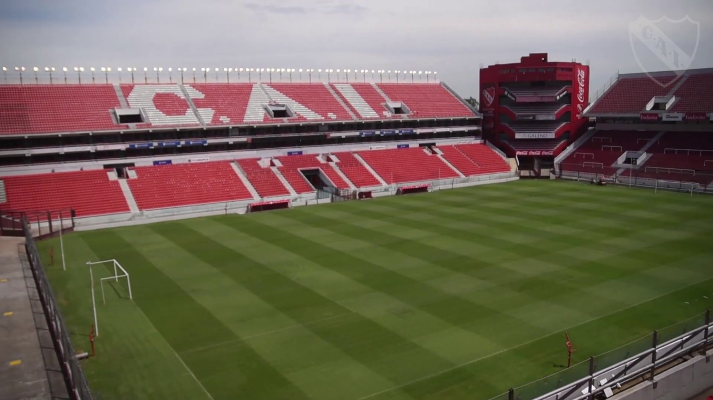
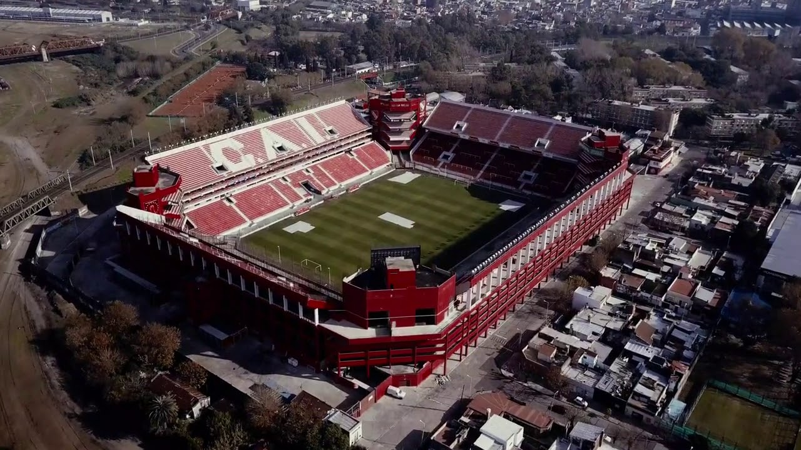

El primer estadio se inauguró el 4 de marzo de 1928 se inauguró, en un partido entre Independiente y Peñarol de Montevideo. En 1960 el estadio fue remodelado y el 20 de agosto de 1961 se inauguraron las remodelaciones con un partido Independiente y Racing con una victoria contundente de los rojos.
EL 8 de diciembre del 2006 el estadio cierra sus puertas. Para empezar con la demolición y la nueva construcción del nuevo estadio.
El nuevo estadio es el más completo y moderno de Argentina. Sigue al estadio Ciudad de la Plata. La construcción del estadio costó 50 millones de dólares. La venta de del jugador Sergio Agüero y el arquero Oscar Ustari solventó una gran parte del costo del estadio. El nuevo estadio se hizo sobre las bases del antiguo estadio, es el tercer estadio de Argentina que cumple las normas de la FIFA.
 